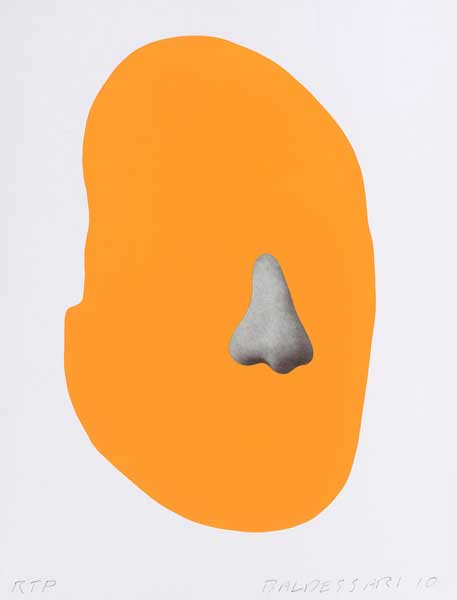

TOO MUCH SPACE.

Enter the internet: an alternate universe that we have created by storing our personal data in an intangible world that we cannot physically interact with. The internet is a infinite landfill, storing all its interactions to every last detail. How do we exist in the internet that is so vast and how can we exist if we aren't physically there? How safe is the internet and why have we created such a reliance on it when we don’t know exactly where our things are, who is seeing it and who can access it? The internet can lay us out naked and bare, but it can also seem like our own private sanctury. The internets storage container is huge but when does it have too much space?
Below, we explore the in's and out's of the internet, and how we personally evolve on the interent and our security when we put ourselves out on the net.
Below, we explore the in's and out's of the internet, and how we personally evolve on the interent and our security when we put ourselves out on the net.

IF IT DOESN'T EXIST ON THE INTERNET, IT DOESN'T EXIST
KENNETH GOLDSMITH, 2005
KENNETH GOLDSMITH, 2005